動物たちの紹介
哺乳類・鳥類・は虫類の仲間たちをご紹介します。動画集もあわせてご覧ください。
🎬 動画集 動物たちの動いているようすを動画でご覧いただけます。スタッフブログ・動画集はこちら ↗
Mammals ・ 草食動物
哺乳類（草食動物）
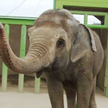
ゾウ
飼育中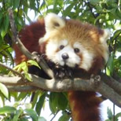
レッサーパンダ
現在飼育しておりません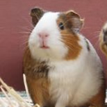
モルモット
飼育中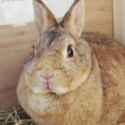
ウサギ
飼育中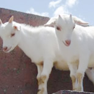
シバヤギ
飼育中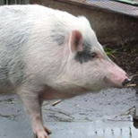
ミニブタ
飼育中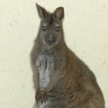
ベネットアカクビワラビー
現在飼育しておりません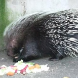
アフリカタテガミヤマアラシ
飼育中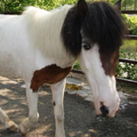
ポニー
飼育中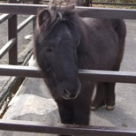
ミニチュアホース
飼育中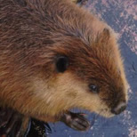
アメリカビーバー
飼育中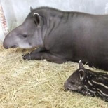
ブラジルバク
飼育中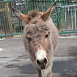
ロバ
飼育中Mammals ・ 肉食・雑食
肉食・雑食・魚を食べる動物
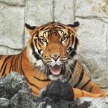
トラ
現在飼育しておりません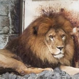
ライオン
飼育中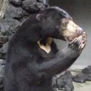
マレーグマ
飼育中Primates
サルの仲間（中～大型）
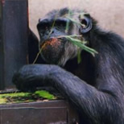
チンパンジー
飼育中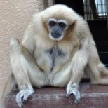
シロテテナガザル
飼育中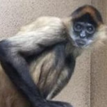
ジェフロイクモザル
飼育中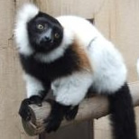
エリマキキツネザル
飼育中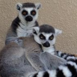
ワオキツネザル
飼育中サルの仲間（小型）
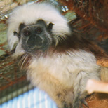
ワタボウシパンシェ
飼育中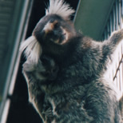
コモンマーモセット
飼育中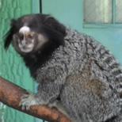
クロミミマーモセット
現在飼育しておりませんBirds
鳥類
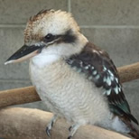
ワライカワセミ
飼育中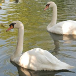
コブハクチョウ
飼育中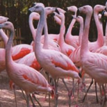
チリーフラミンゴ
飼育中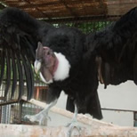
アンデスコンドル
現在飼育しておりません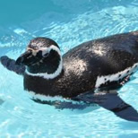
マゼランペンギン
飼育中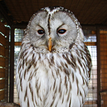
フクロウ
飼育中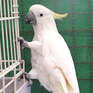
キバタン
飼育中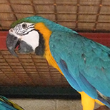
ルリコンゴウインコ
飼育中Reptiles
は虫類
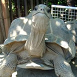
アルダブラゾウガメ
飼育中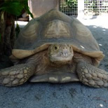
ケヅメリクガメ
飼育中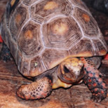
アカアシガメ
飼育中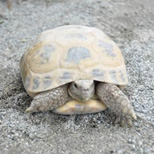
ホルスフィールドリクガメ
飼育中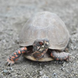
ミツユビハコガメ
飼育中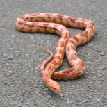